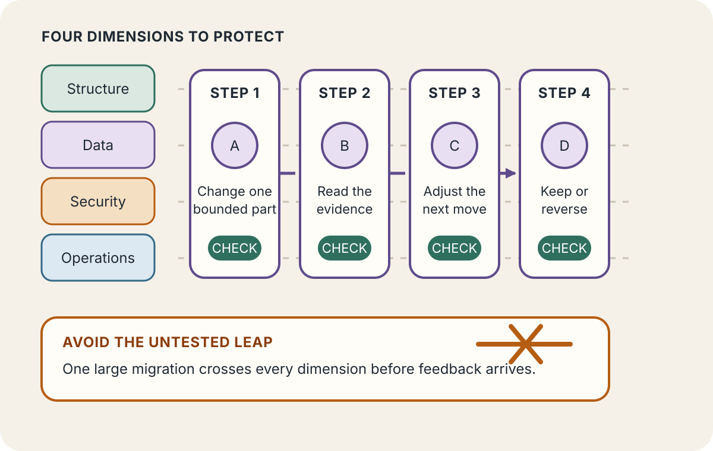
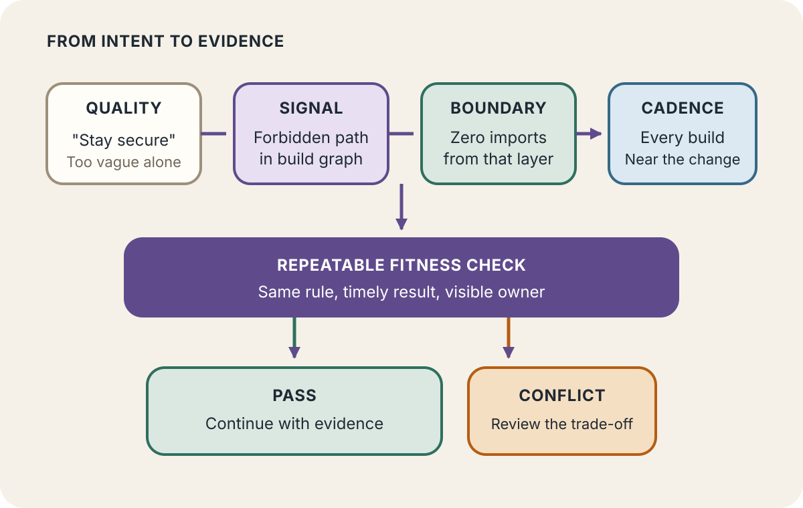
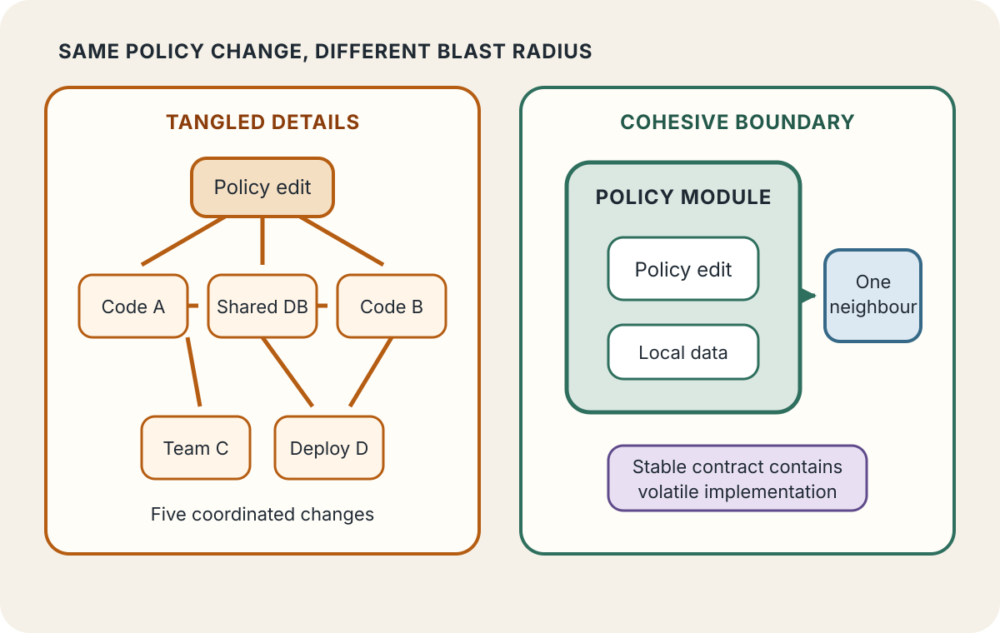

Daily lesson ·
Building Evolutionary Architectures
Build software that can change safely by making important architectural qualities explicit, checking them continuously, and shaping boundaries so one local change does not become a system-wide migration.
Idea 1
Guide change in small increments #
The idea
The authors define evolutionary architecture as guided, incremental change across multiple dimensions. Incremental means the system can move through small, deployable steps rather than waiting for a speculative final design. Guided means those steps are evaluated against the qualities the organisation needs to protect.
Multiple dimensions matter because architecture is more than code structure. Data, security, reliability, performance, operability and team responsibilities can all change at different speeds. An improvement in one dimension can damage another, so evolution needs explicit feedback rather than faith that local progress will preserve the whole system.

Why it matters
A smaller architectural step shortens the distance between decision and evidence. It limits the cost of a wrong assumption and makes conflicts among qualities visible while the team still has practical options.
Apply it today
Choose one planned architecture change and rewrite it as the smallest production-safe step that can produce useful evidence.
List the two dimensions most likely to be affected, then write one observation for each that would tell you whether to continue or adjust.
Caveat or failure mode
Small steps are not automatically safe or coherent. Some migrations require coordinated changes, and excessive fragmentation can create temporary complexity. Define an end condition, manage transitional states, and use rollback or compatibility plans where partial deployment would be harmful.
Idea 2
Make architecture testable #
The idea
The authors borrow the fitness-function idea to make architectural intent observable. A fitness function objectively assesses whether an important characteristic remains within an acceptable state as the system changes. It can be a test, metric, policy check, review or other repeatable verification mechanism.
The second edition connects fitness functions to automated governance. Instead of relying only on periodic inspection or vague instructions such as keep the system maintainable, a team can check a specific rule or outcome close to the change. The authors also stress selection: the cost of creating and maintaining a check should be justified by the value of the characteristic it protects.

Why it matters
An executable or repeatable rule gives developers feedback while the change is still fresh. It also exposes disagreements about what an architectural quality means, so governance can focus on exceptions and conflicts rather than rediscovering routine defects late.
Apply it today
Pick one costly failure mode, such as a forbidden dependency, an accessibility regression or lost-message risk. Write the smallest observable signal that would reveal it.
Choose where the check belongs: every build, deployment, scheduled review or explicit human checkpoint. Record what should happen when it fails.
Caveat or failure mode
A measurable proxy can be precise and still be wrong. Thresholds can encourage gaming, generated alerts can become noise, and some qualities require informed human judgement. Review whether each fitness function still predicts the outcome that matters, and retire checks whose maintenance cost exceeds their value.
Idea 3
Shape coupling for change #
The idea
The authors argue that evolvability depends heavily on structure, especially how parts of a system are coupled. Complex software needs connections, so the goal is not zero coupling. It is appropriate coupling: keep highly related behaviour cohesive while preventing implementation details and volatile decisions from leaking across boundaries.
The second edition examines architectural quanta, bounded contexts and independently deployable structure. When a local change forces coordinated edits, releases or data migrations across many components, the system has revealed a change boundary larger than its diagram suggests. Reversible decisions, clear contracts and anti-corruption boundaries can reduce that blast radius.

Why it matters
A boundary that contains change lets teams release, learn and reverse locally. It also makes the cost of a proposed abstraction visible: reuse that spreads volatile details can increase coordination even when it reduces duplicated code.
Apply it today
Take the last cross-cutting change and list every component, data store, contract, team and deployment it required.
Circle one connection that transmitted implementation detail rather than a stable capability. Write one contract, adapter or ownership change that could contain the next similar change.
Caveat or failure mode
More boundaries can add network failure modes, duplicated data, operational overhead and harder end-to-end reasoning. Do not split components to imitate a fashionable architecture. Optimise for the changes and qualities your system actually faces, and accept coupling that is stable, explicit and cheaper than separation.
Knowledge check · 6 questions
Learning check
Answer all 6, then check your answers. Your first result stays in this browser, and each explanation appears after you check. A 3-question review can appear on the homepage from tomorrow.
6 questions not yet answered.
Today's experiment · 10 minutes
Write one architecture safety signal
- Minutes 0 to 2: choose one planned change and name the architectural quality most likely to regress.
- Minutes 2 to 4: write one observable signal for that quality, avoiding adjectives that cannot produce a shared result.
- Minutes 4 to 6: set a boundary or review trigger, and choose when the signal should be checked.
- Minutes 6 to 8: trace the change through code, data, contracts, teams and deployments. Mark the largest forced coordination point.
- Minutes 8 to 10: write the smallest production-safe step that tests the signal without committing to the full architecture.
Observable result: One planned incremental change, one decision-ready fitness signal, and one visible coupling point to monitor or reduce.
Retrieval practice
Spaced recall
- From Continuous Delivery: how do small batches change the cost of learning that an architectural assumption is wrong?
- From Designing Event-Driven Systems: which ownership or replay boundary prevents one local data change from spreading unsafe coordination?
- From The Programmer's Brain: what external trace would make a hidden dependency easier for the next developer to inspect?
Verification
Source notes
These links support the attributed claims and edition details; applications and extensions are labelled in the lesson.
- O'Reilly: Building Evolutionary Architectures, second edition details and contents
- Thoughtworks: second edition overview, authors and expanded focus
- Thoughtworks: official second edition sample chapter on guided incremental change
- Evolutionary Architecture authors' site: definition, dimensions and fitness functions
- Thoughtworks Technology Podcast: authors on automated governance and coupling
- Thoughtworks: fitness function-driven development and continuous feedback
One-sentence takeaway